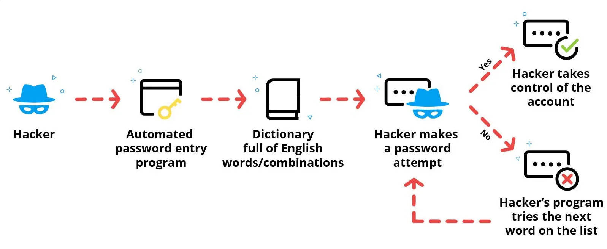
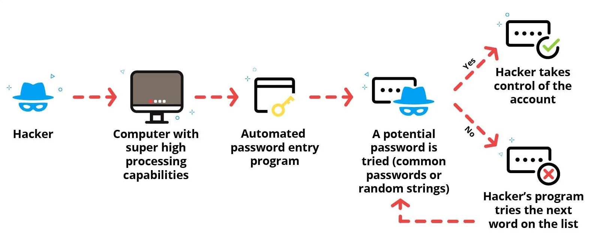

The CIA triad is a widely recognized model for information security that stands for Confidentiality, Integrity, and Availability. This model represents three fundamental principles that are essential for ensuring the security of sensitive information and information systems. This concept is significantly more in depth than it may appear at first glance but for now just understand the broad concept itself. All 3 areas of the Triad are dependent upon one another. In some instances the Acronym may be moved around to put an emphasis on a specific area.
Refers to the protection of information from unauthorized disclosure. It is important to ensure that sensitive data is accessible only to authorized individuals or entities. Confidentiality is maintained through the use of various security mechanisms such as access controls, encryption, and secure communication protocols.
Refers to the assurance that information is accurate, complete, and trustworthy. Maintaining data integrity is important to ensure that information is not corrupted or altered in an unauthorized manner. Data integrity can be compromised by various forms of data tampering, including viruses, malware, and human error.
Refers to the accessibility of information and systems to authorized users when they need it. It is essential that systems and data are available to authorized users at all times. Ensuring availability involves taking measures to prevent downtime, disruptions, and outages caused by hardware or software failures, natural disasters, or malicious attacks.
These attacks take advantage of people who use short, common words or combinations of these words as their passwords. It's called a dictionary attack because some hackers can literally try every word in the dictionary! This is quite a long list as there are over one million words in the English language and over 3 million combinations of six letters.
To initiate the attack, the hacker tries a long list of common words, together with numbers before or after them like people often use. They sometimes use company usernames so that they can try passwords based on peoples' names. This type of attack only works when a site or program doesn't lock users out after a certain number of invalid attempts.
Sometimes, a dictionary attack is used to uncover the decryption key so that encrypted data can be decrypted and stolen in a traffic-interruption attack.
The following diagram shows how a dictionary attack works: 
A brute force attack is where an attacker tries to use every possible combination of letters and numbers until they find a password. For example, they may try aaaaaaa, then aaaaaab, then aaaaaac, and so on. This is a bit like a huge army attacking a fort. The defenses might be able to keep out most attackers, but the sheer numbers will eventually overwhelm them. Hackers need an incredibly large number of attempts because of the astronomical numbers involved. For example, in an 8-character alphanumeric password that allows both uppercase and lowercase letters, there are over 200 trillion possible combinations! It's easy to see why these kinds of attacks require a great deal of computing power.
The following diagram shows how a brute force attack works: 
A traffic-interruption attack uses software to interrupt network traffic and intercept passwords as they're passed between computers. This is easier to steal if the information isn't encrypted.
During a man-in-the-middle (MITM) attack, a hacker impersonates a website or app to convince someone to input their password, which they then steal.
During a keylogger attack, a hacker manages to install software on another person's computer to record that person's keystrokes. The next time someone enters their password, the hacker will have a record of which keys they pressed.
Social engineering attacks are another kind of digital attack that can be used to steal information from a user. Hackers send fake emails, messages, or texts pretending to be someone else, often from a reputable company such as Amazon or Microsoft. They use these to trick people into giving them their personal information. In a phishing message, there might be signs that something is off, like a logo that doesn't look quite right or an email address that's misspelled (such as Guggle instead of Google).
It's a good idea to avoid clicking on any email links that come from senders you don't know. When in doubt, call the company's customer service line and ask if they were actually trying to contact you. Reputable companies almost never ask for personal information in an email.
The Payment Card Industry Data Security Standards (PCI DSS) were developed to protect payment card data. PCI DSS defines 12 requirements under six goals that an organization must adhere to. The following table describes these goals and requirements.
| PCI DSS Goal | PCI DSS Requirements |
|---|---|
| Build and maintain a secure network | Install and maintain a firewall configuration to protect cardholder data. Do not use vendor-supplied defaults for system passwords and other security parameters. |
| Protect cardholder data | Protect stored cardholder data. Encrypt transmission of cardholder data across open, public networks. |
| Maintain a vulnerability management program | Use and regularly update antivirus software or programs. Develop and maintain secure systems and applications. |
| Implement strong access control measures | Restrict access to cardholder data by business need to know. Assign a unique ID to each person with computer access. Restrict physical access to cardholder data. |
| Regularly monitor and test networks | Track and monitor all access to network resources and cardholder data. Regularly test security systems and processes. |
| Maintain an information security policy | An organization is required to maintain a policy that addresses information security for all personnel. |
Personally Identifiable Information (PII) refers to any data that can be used to identify an individual, such as names, social security numbers, addresses, phone numbers, or email addresses.
An individual's healthcare information is some of the most sensitive data an individual has. It must be kept secure at all times. The Health Insurance Portability and Accountability Act (HIPAA) is the primary law defining how this data should be kept secure. All healthcare providers must take HIPAA seriously and abide by all regulations.
HIPAA contains two parts that IT professionals need to be aware of. Violations will lead to large fines.
| Law/Regulation | Description |
|---|---|
| Family Educational Rights and Privacy Act (FERPA) | All educational institutions must keep detailed student records. The sensitive information kept in these files must be kept secure. FERPA provides institutions with procedures to secure this information including defining: How to store the information. Who the information can be shared with. How long the data must be retained. |
| California Consumer Privacy Act (CCPA) | The CCPA was enacted in 2018 and took effect in 2020. The CCPA allows California citizens to have control over their personal information that businesses collect. Key components of the CCPA include: The right to know the information that a business collects about an individual. The right to delete collected personal information. The right to opt-out of the sale of an individual's personal information. |
| General Data Protection Regulation (GDPR) | The GDPR applies to citizens in the European Union and provides many of the same rights as the CCPA. Like the CCPA, many organizations that operate in both the EU and other countries provide these rights to all users regardless of location. |
Cybersecurity Curriculum | CyberSec Basics